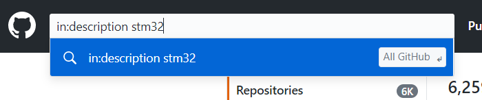

文明重启之 Born of this website
开始做网站的时候，其实是分为几个阶段的，第一个阶段是感觉凭自己现在读完了整本《web开发指南》并在考试中拿到60分儿的优异成绩的可怕实力稍微努努力应该中，于是开始了在sketchup上画网页设计图，开始笔墨江山并起了个名叫做 “村雨的博物馆” 准备日后的一些作品和设计手稿有地儿放，并在每次去食堂的路上开始思考···
搭建个人网站如果是用现有的博客系统的话是很简单的，静态动态都没问题，但我认为搭建网站的过程也值得学习，所以应该自己动手从石器时代开始，于是便遇到了以下几个问题
Problem
工程量很大- 很多高级css、js动效并不会
- 需要数据库，以及像Spring boot来集成消息队列、数据库、缓存、权限blablabla（关于Spring）
网站并不只有css做成的门面，显然我早就意识到了，但那天在web课上跟一位女同学看我做出的网页的时候并没有意识到这个问题的严重性，直到开始思考————网站的登录、用户管理、权限管理系统和藏品、博文以及往期回顾谁管？————的问题，遇到问题解决问题，于是我有了以下解决方案.
Solution
one
网站重要的是排版布局，我对此还并无太多经验，但可以到一些优秀的网站比如大西洋月刊——The Altlantic、Medium等优秀的网站来偷师，可以访问源代码看看别人咋设计的，比如CSS的animation一开始我是在迅雷的主页上学到的。当然最有效的是去GitHub上找一些开源项目，我这一找就寻到了宝；关于GitHub的使用有一个小技巧：
搜索时，可以在搜索框里添加条件，例如你想搜索在项目描述里出现XXX这个词的项目，你就可以输入 in:description XXX 类似的，还有 in:name XXX 、 stars:>XXX，这是得星数大于XXX的项目等等 
我找到了一个网页框架，emmmmm其实只有主页面，和一些css以及js以及其他的文件，比较简陋，不过他的布局和字体很好，我可以在这 “残篇” 上继续建设改造，不过后来发现其中css文件不止有.css，还出现了一种看着非常熟悉但就是不认识的文件，看其后缀名为.scss，于是我知道又有一堆垃圾东西要学了，关于Sass预处理技术会在下文提到，于是第一个问题解决了。
two
数据库啥的是真一点儿没接触过，但好在下学期开，那我为什么不打算现在继续勇往直前的学呢，因为我发现一进入后端的领域就出现了一大堆我所不知道的知识，现阶段的主要目的并不是这个，学也学不完，学完了也不牢靠，浪费时间和生命，不如学了什么用什么； 咳咳，所以，“村雨的博物馆” 经费不足演员未定剧本暂无————敬请期待！ 于是 “村雨的阅览室” 便诞生了，我决定使用GitHub当替代品数据库，而且GitHub不要钱，管理方便（对于现在的技术水平而言），关于GitHub我有一个B站的up主推荐——CodeSheep； 于是数据的存放问题解决了，现在还剩下如何方便的往网站内添加内容。
three
肯定不想每次写文章都得面对源代码，这有违 “咖啡桌办公理念” ；于是有以下分析：
- 既然阉割了用户系统就成了静态网站了，静态网站只需要搭建一个自己的内容管理“机制”即可；
- 添加内容在85%的情况下是添加文章，所以可以设立几个页面作为添加不同类型文章的模板，模板需具有以下特点：
- 通用性好，样式要符合今后发的大部分类型的文章
- 方便编辑
于是便用到了两种工具 —— 富文本编辑器 rich text editor 和 Markdown编辑器，具体描述将写在下面。 3. 剩下的25%是挥洒创意的部分，有时可能会有一些作品为了艺术效果需要特别排版布局的页面，这就是自己创造的优势，可以自由的表达
至此，最后一个问题便解决了。
CSS Preprocessing
如果遇到如下类型的文件：

说明你遇到了css预处理技术的一种——SASS； 在编写一个网站的时候通常代码动不动就几千行，各种样式需要管理，于是在此基础上再度优化就得到了连CSS都不用写的技术，那便是预处理技术，可以理解为更高级的css，里面支持函数、链接、混合等功能，等编写完成后便可以自动转化为css文件（生成一个对应的css文件）；
目前的预处理技术有几种：
- Sass
- less
- Stylus
Editor and GitHub
rich text editor
一种所见即所得的编辑器，引入到网页中的效果如下： 在网页上将内容编辑好后，点击按钮就可以将其提取固定到页面上（这个按钮当然是自己添加的，使用DOM提取然后写入，这涉及到JavaScript的知识，好好学习） 这种功能可以通过将一个比如textarea的contentEditable属性设为true来实现：


编辑结束后再设置为false；以上代码出自一个小栗子(不是上面图里的那个editor，那个是simeditor)，一个简易的editor来说明原理的：
有几个推荐的富文本编辑器：
- ‘CKEditor’
- ‘Simditor’
- ‘Quill’
- ‘MediumEditor’ （纯js实现，不依赖其他库，轻量的editor）
- ‘Trumbowyg’
- ‘Jodit’
- WangEditor （不想接触一堆非母语的同志可以试试这款国产的editor）
哈哈哈哈哈是不是很多 ~ 是不是选择困难啦hiehiehiehie ~ 其中我真正用过的只有simeditor、mediumEditor以及正在使用的Jodit；还有某度的editor，但是颜值太低了有种上世纪六十年代的风格所以刻意忽略了······
markdown editor
markdown是一种语法，在GitHub上写readme.md的时候用的就是markdown语法，我觉得富文本编辑器适合编辑一些emmmmmm非技术性的内容，markdown适合写一些条理性较强的文章，所以设立了两种网页模板； 我是用markdown有点投机取巧，毕竟如此勤劳也有懒得想省事儿的地方，所谓编辑器不就是将文本转化成代码么，于是我便通过第三方编辑器编辑，之后拷贝生成的代码至我的网页再加以微整形即可；这比使用博客系统多的一步就是编辑好后不是直接提交，二是拷贝代码和微整形~ 也可以下载一个markdown编辑器，引入网页，如果想折腾的话这儿有一个不错的GitHub开源项目： ‘Markdown_in_Github’
Github
关于GitHub的使用推荐这个视频：Study_in_BiliBili··· 在这个up主的视频里我发现了一个尴尬的事情，有一个视频名叫：

于是我想起了自己下学期的课表，emmmmmmm，emmmmmmmmmmmmmmm，看来无知便是福呀！
为了贯彻落实 “咖啡桌办公理念” 的精神，我决定使用桌面版GitHub，谁愿看黑乎乎的命令行诶~~~
Plan in next step
当你某些时候遇到个些奇怪的名词出现在身边可能不会在意，然后接下来的几周你发现它突然变得到处都是了，这时你知道，没错，又有一堆垃圾东西要学了。 过一段时间要对各种将要出现的垃圾东西作以 “简要不一定准确剧透” 的总结。例如Spring、Spring boot、Spring MVC、JSON、Node.js、XML、.net等；不过大人口中的 “过一段时间” 基本上百分之五十就等于你再也等不着了 ~
2020 . 2 . 9 ….